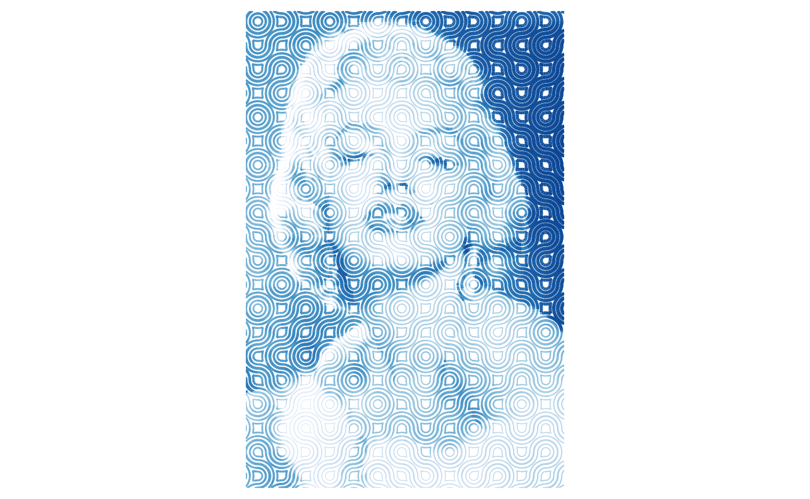

Figurative mosaics with variable-width lines
Source:vignettes/articles/a04-figurative-mosaics-variable-width.Rmd
a04-figurative-mosaics-variable-width.RmdAn earlier article in this series shows how to use flexible Truchet tiles to create figurative mosaics. Another way to create figurative mosaics is to vary the width of the lines. This article illustrate this procedure.
The keys to this procedure are to:
- Generate a mosaic with a relatively dense collection of lines;
- Slice these lines using a relatively fine grid; and
- Use an image with a relatively high resolution, similar to the grid used to slice the lines of the mosaic.
Here, the word “relatively” is doing some heavy-lifting, and some experimentation will typically be required to find combinations of density of lines and resolution of the image that work well for a given mosaic.
The packages needed (addition to {truchet}), are {dplyr}, {ggplot2}, {imager}, lwgeom, {purrr}, and {sf}:
library(dplyr)
library(ggplot2)
library(imager)
library(lwgeom)
library(purrr)
library(sf)
library(truchet)Read the image for this example. Use imager::load.image():
marilyn <- load.image(system.file("extdata",
"marilyn.jpg",
package = "truchet"))The size of the image is 800-by-1200 pixels, and it is already in greyscale:
marilyn
#> Image. Width: 800 pix Height: 1200 pix Depth: 1 Colour channels: 1This is the image:
plot(marilyn)The resolution is too high, which in addition to increasing the computational demands kind of defeats the purpose of a figurative mosaic. Experimenting with various image sizes I have found that working in the neighborhood of 60,000 pixels gives pleasing results in reasonably short times. This represents a square image of approximately 245 pixels by side. Resizing does not necessarily give an image of the desired size here because it depends on the interpolation algorith. Presently, scaling by a factor of \(1/4\) gives good results:
marilyn_rs <- imager::imresize(marilyn,
scale = 1/4,
interpolation = 6)The image needs to be converted to a data frame and the y axis needs to be reversed:
marilyn_df <- marilyn_rs %>%
as.data.frame() %>%
mutate(y = -(y - max(y)))Notice that now the size of the image is 60000.
This is the plot of the rescaled image (using {ggplot}):
ggplot() +
geom_point(data = marilyn_df,
aes(x = x,
y = y,
color = value)) +
coord_equal()Next, we need to create a data frame for placing the tiles for the mosaic. This presents a challenge: 60,000 tiles is too many - but at the same time, fewer pixels degrade the image. To resolve this, we can use a smaller mosaic that then is scaled up to the size of the desired image. A parameter s here indicates the spacing of the tiles in the target image. For example, \(s = 15\) here means that there will be one tile every fifteen pixels in the target image. Other parameters used in this chunk include: 1) expanding the coordinates of the scaled-down mosaic by 4 pixels in each direction, to give a buffer around the target image; 2) defining the scale of the tiles, which is set to 1 here (meaning each individual tile is of size 1-by-1). The tiles used are of type “dl” and “dr”.
# This will use a smaller subset of points to create the mosaic, which will then be rescaled
s <- 15
xlim <- c(min(marilyn_df$x)/s - 4, max(marilyn_df$x)/s + 4)
ylim <- c(min(marilyn_df$y)/s - 4, max(marilyn_df$y)/s + 4)
# Create a data frame with the coordinates for the tiles and define a scale parameter
m_1 <- expand.grid(x = seq(xlim[1], xlim[2], 1),
y = seq(ylim[1], ylim[2], 1)) %>%
mutate(tiles = sample(c("dl", "dr"), n(), replace = TRUE),
scale_p = 1)Function st_truchet_ms() is used to assemble the mosaic according to the specifications coded in data frame m_1:
m_1 <- st_truchet_ms(df = m_1)This is the mosaic:
ggplot() +
geom_sf(data = m_1 %>% st_truchet_dissolve(),
aes(fill = color),
color = "white")Notice the difference in the scale of the mosaic to the target image. Despite the relatively dense aspect, the density of lines of this mosaic is not very high when scaled up to the size of the target image. To increase the number of lines, the mosaic is first dissolved (i.e., the boundaries of the individual mosaics are deleted to create compact polygons of the same color), and then buffered. This is done twice (which I find gives good results). After buffering, some geometries may become empty and need to be removed:
m_2 <- m_1 %>%
# Dissolve boundaries
st_truchet_dissolve() %>%
# Buffer the polygons
st_buffer(dist = -0.15) %>%
# Adjust the color field to distinguish it from the original polygons
mutate(color = color + 2)
# Remove empty geometries
m_2 <- m_2[!st_is_empty(m_2), , drop = FALSE]The mosaics at the moment are composed of polygons. In this following chunk they are cast to “MULTILINESTRING” type (the original mosaic after dissolving the boundaries):
m_1_lines <- m_1 %>%
st_truchet_dissolve() %>%
st_cast(to = "MULTILINESTRING")
m_2_lines <- m_2 %>%
st_cast(to = "MULTILINESTRING")This is now the mosaic composed of lines instead of polygons:
The mosaic, which is still a scaled down version of the target image, needs to be scaled up. To do this, we first get the union of the geometries so that they are scaled uniformly:
Recall that to make the mosaic we used only one pixel of every fifteen in the target image. We scale by an identical factor (and convert the result to simple features):
The mosaic is now in the same scale as the image, and the tiles instead of being 1-by-1 are now 15-by-15:
We now bind the two sets of lines into the scaled up mosaic:
mosaic <- rbind(m_1_union,
m_2_union)The next step is to create a blade to slice the lines. We want to slice the lines into small segments, but there is a trade-off between their size (smaller segments give better defined mosaics) and the time it takes to complete the operation (slicing into smaller segments takes longer).
In any case, it does not make sense to slice the lines into segments smaller than the size of the pixels of the target image, because this would result in longer computer times with no gain in definition (as segments smaller than a pixel would get the same information when contained by the same pixel). Thus, we create a blade with a resolution of exactly one pixel (which is why rescaling the image is important, since besides assembling the mosaic slicing it is the second computational bottleneck in this procedure):
# Use the bounding box of the mosaic to define the extents of the grid that becomes the blade
bbox <- st_bbox(mosaic) %>%
round()
# Create a data frame with the start and end points of the lines that become the blade to split the mosaic lines
blade <- data.frame(x_start = c(bbox$xmin:bbox$xmax,
rep(bbox$ymin,
length(bbox$ymin:bbox$ymax))),
x_end = c(bbox$xmin:bbox$xmax,
rep(bbox$xmax,
length(bbox$ymin:bbox$ymax))),
y_start = c(rep(bbox$ymin,
length(bbox$xmin:bbox$xmax)),
bbox$ymin:bbox$ymax),
y_end = c(rep(bbox$ymax,
length(bbox$xmin:bbox$xmax)),
bbox$ymin:bbox$ymax))
# Shift the blade a small amount to avoid perfect overlap with lines in the mosaic
blade <- blade %>%
mutate(across(everything(),
~ .x + 0.18))
# Create the blade and convert to simple features
blade <- purrr::pmap(blade,
function(x_start, x_end, y_start, y_end){
st_linestring(
matrix(c(x_start,
y_start,
x_end,
y_end),
ncol = 2,
byrow = TRUE))}) %>%
st_as_sfc()We are now ready to use the blade to split the lines (warning: this will take several minutes, depending how fine the blade is):
Extract the geometries of the sliced lines:
mosaic_lines <- mosaic_lines %>%
st_collection_extract(type = "LINESTRING") %>%
st_cast(to = "LINESTRING") %>%
mutate(id = 1:n())Convert the data frame with the image to simple features. This way we can use functions from the {sf} package to find the nearest feature to borrow the greyscale values:
Find the nearest feature to each line segment and borrow the greyscale value:
value <- marilyn_sf[mosaic_lines %>%
st_nearest_feature(marilyn_sf),] %>%
pull(value)We can now add the greyscale value to the data frame with the mosaic:
mosaic_lines$value <- valueWe are now ready to plot the mosaic.
A tricky aspect when rendering the image is how to achieve a good definition of the underlying image by changing the size of the lines. This may require manipulating the grayscale values. For example, in this plot the size is proportional to the value and the range of sizes of the lines varies between [0.01, 1]:
ggplot() +
geom_sf(data = mosaic_lines %>%
st_set_agr("constant") %>%
st_crop(marilyn_sf),
# Reverse the valence of values
aes(size = -value)) +
scale_size(range = c(0.01, 1)) +
coord_sf(expand = FALSE) +
theme_void() +
theme(legend.position = "none",
plot.margin = margin(0.1, 0.1, 0.1, 0.1, "in"))As an alternative to reversing the valence of values, we can exaggerate the differences in values with a negative exponential function, as in this example:
ggplot() +
geom_sf(data = mosaic_lines %>%
st_set_agr("constant") %>%
st_crop(marilyn_sf),
aes(size = exp(-2 * value))) +
scale_size(range = c(0.01, 1)) +
coord_sf(expand = FALSE) +
theme_void() +
theme(legend.position = "none",
plot.margin = margin(0.1, 0.1, 0.1, 0.1, "in"))An additional modification is to make the color of the lines a function of the greyscale value:
ggplot() +
geom_sf(data = mosaic_lines %>%
st_set_agr("constant") %>%
st_crop(marilyn_sf),
aes(color = value,
size = exp(-2 * value))) +
scale_color_distiller(direction = -1) +
scale_size(range = c(0.01, 1)) +
coord_sf(expand = FALSE) +
theme_void() +
theme(legend.position = "none",
plot.margin = margin(0.1, 0.1, 0.1, 0.1, "in"))
Adding color to the background can help to emphasize the lines:
ggplot() +
geom_sf(data = mosaic_lines %>%
st_set_agr("constant") %>%
st_crop(marilyn_sf),
aes(color = value,
size = exp(-2 * value))) +
scale_color_distiller(direction = -1) +
scale_size(range = c(0.01, 1)) +
coord_sf(expand = FALSE) +
theme_void() +
theme(legend.position = "none",
plot.margin = margin(0.1, 0.1, 0.1, 0.1, "in"),
plot.background = element_rect(fill = "azure"))These are just some examples of the parameters that can be explored when creating figurative mosaics with Truchet tiles with variable-width lines.